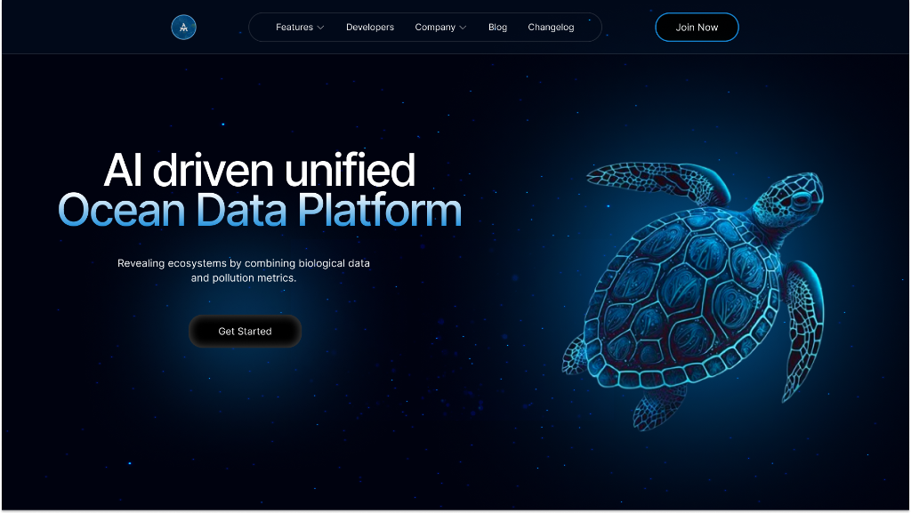
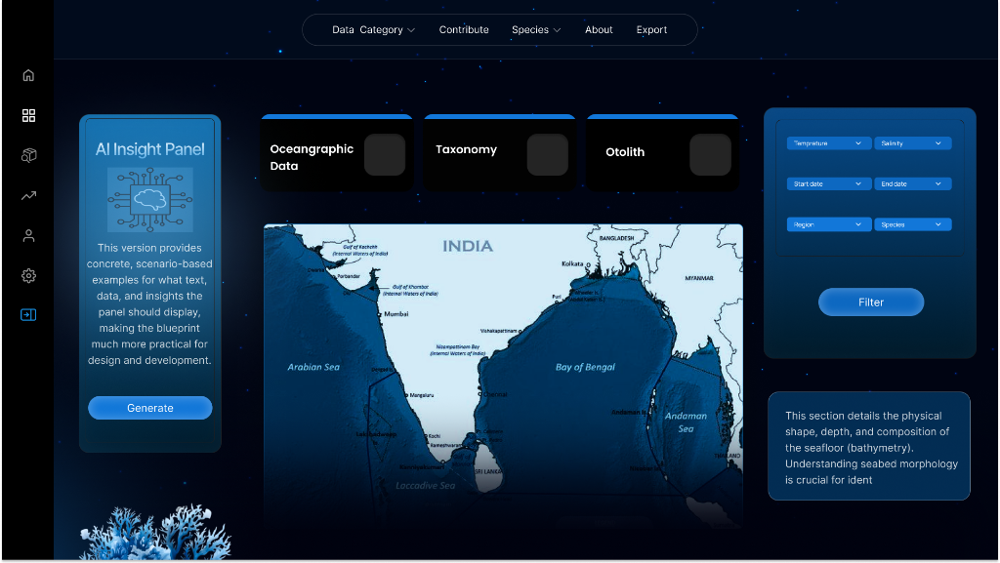
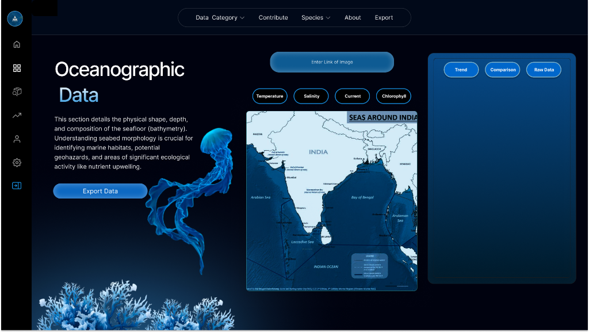
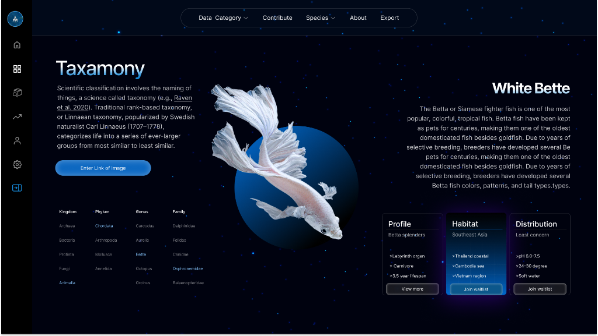

AI-Driven Unified Data Platform for Oceanographic, Fisheries, and Molecular Biodiversity Insights
Explore Case StudyOceanographic data is scattered across dozens of siloed sources, forcing marine researchers to spend more time finding data than analyzing it.
Marine scientists, fisheries researchers, and biodiversity analysts currently rely on fragmented datasets spread across multiple platforms, file formats, and institutions. There is no single unified interface that brings together oceanographic measurements, species taxonomy, and otolith analysis data — let alone one powered by AI to surface the most relevant results. This fragmentation leads to duplicated effort, missed correlations, and slower scientific discovery.
Oceanographic data is scattered across disparate sources. Researchers waste hours navigating between systems, manually cross-referencing datasets, and reformatting exports. The lack of a unified view means critical patterns in ocean health, species migration, and climate impact go undetected.
Design a single, AI-integrated web platform that unifies three primary dataset categories — Oceanographic Data, Taxonomy, and Otolith — with an interactive world map for geographic navigation, intelligent AI filtering, and one-click data export capabilities.
Deep-diving into the world of marine researchers, fisheries scientists, and biodiversity analysts to uncover their pain points and workflows.
Researchers reported using 5–8 different platforms to gather the data needed for a single study. Temperature, salinity, taxonomy records, and otolith data lived in completely separate systems with incompatible formats.
Every data point in oceanography is tied to a specific location. Researchers need to navigate data spatially — selecting a region on a map and extracting all relevant datasets for that area, not scrolling through spreadsheets.
Once researchers find the data they need, exporting it into usable formats (Excel, CSV) for further analysis or collaboration is a manual, error-prone process. An AI-assisted export would save hours of reformatting.
With vast amounts of oceanographic data available, researchers struggle to find the most relevant results. AI-powered filtering that surfaces the best matches based on research context would be transformative.
Taxonomic classification requires detailed visual and hierarchical information. Researchers need quick access to species profiles, habitat data, and distribution maps all in one view.
Raw data alone isn't enough. Researchers need trend visualizations, comparison tools, and the ability to toggle between different data representations (Temperature, Salinity, Current, Chlorophyll).
A structured, iterative approach that balanced complex data requirements with an intuitive, visually immersive user experience.
Conducted stakeholder interviews with marine biologists and data scientists to map their current workflows. Created user personas representing primary user groups: Field Researchers collecting data in the field, Lab Analysts processing samples and otolith images, and Policy Advisors who need synthesized reports. Defined the information architecture around the three primary data pillars — Oceanographic, Taxonomy, and Otolith.
Structured the platform around a map-first interaction model — users begin by selecting a geographic region of interest, then drill into the three data categories. The navigation reflects the mental model of researchers: location → data type → specific parameters → export. Designed the AI Insight Panel as a persistent companion that provides contextual suggestions based on the current data view.
Developed a deep ocean-inspired dark theme that evokes the underwater environment while maintaining high readability for data-dense interfaces. The dark background reduces eye strain during long research sessions. Bioluminescent blue accents (#0EA5E9 → #22D3EE) guide attention. Glassmorphism panels create visual hierarchy without harsh borders. High-quality marine imagery was integrated to reinforce the domain context.
Built high-fidelity prototypes in Figma, iterating through multiple rounds of feedback with researchers. Key iterations included: repositioning the filter panel for faster access, adding AI-generated data summaries within the export flow, and introducing tabbed views (Trend / Comparison / Raw Data) in the Oceanographic Data section to accommodate different analysis needs.
Delivered a comprehensive design system with component specifications, interaction annotations, and responsive breakpoints. Collaborated closely with the AI/ML engineering team to define the behavior of the AI Insight Panel and the intelligent export feature that generates formatted spreadsheets from raw data.
A cohesive design system rooted in the deep ocean — dark immersive backgrounds, bioluminescent accents, and glassmorphism for hierarchy.
A detailed look at the four primary screens that form the backbone of the OceanAI platform experience.

The first impression sets the tone — a bold hero section with a commanding headline announces the platform's purpose. The bioluminescent sea turtle illustration grounds the user in the marine domain while subtly signaling the AI-powered nature of the platform through its wireframe-digital aesthetic.

The central hub of the platform — a map-centric dashboard where researchers begin their exploration. The AI Insight Panel on the left provides intelligent, scenario-based data suggestions. Three category toggles (Oceanographic, Taxonomy, Otolith) let users switch data contexts instantly. The filter panel on the right allows multi-parameter queries.

A dedicated deep-dive into oceanographic measurements. This screen enables researchers to explore bathymetric and environmental data across parameters like Temperature, Salinity, Current, and Chlorophyll. The right panel provides togglable views — Trend, Comparison, and Raw Data — for flexible analysis. The "Export Data" button triggers the AI export engine.

The taxonomy page transforms species classification into a visually rich, explorable experience. The left column presents the hierarchical classification system (Kingdom → Phylum → Genus → Family), while the center showcases a high-quality species image. The right column delivers a comprehensive species profile with habitat data, distribution details, and quick-access action cards.
How artificial intelligence and machine learning capabilities were woven into the UX — not as an afterthought, but as a core design pillar.
A persistent, context-aware panel that analyzes the current data view and generates scenario-based insights. Rather than forcing researchers to formulate complex queries, the AI surfaces relevant correlations, anomalies, and patterns. The "Generate" button lets users request deeper analysis on demand — keeping the human in control while the AI handles discovery.
The platform's AI doesn't just filter — it prioritizes. When researchers set parameters (Temperature, Salinity, Region, Species, Date Range), the AI ranks results by relevance to the research context, not just by date or alphabetical order. This means the most scientifically valuable data surfaces first, dramatically reducing time-to-insight.
The export functionality goes beyond simple data dumps. The AI structures the output into clean, formatted spreadsheets with proper headers, data types, and even summary statistics. Researchers get publication-ready datasets with a single click — the "Export Data" button triggers the AI to compile and format the selected data into Excel or CSV format.
The "Enter Link of Image" feature on the Taxonomy page allows researchers to paste a URL to a species image, and the AI identifies the organism, auto-filling the taxonomy classification, habitat data, and distribution information. This bridges the gap between field photography and database identification.
The measurable outcomes of unifying scattered ocean data into a single AI-powered platform, and the design lessons learned along the way.
Three previously siloed data domains (Oceanographic, Taxonomy, Otolith) brought together under a single, navigable interface with consistent design patterns.
The geographic map as the primary interaction point mirrors how researchers naturally think about ocean data — by location first, parameters second.
From searching 5–8 platforms to using a single dashboard with AI-assisted filtering, the design significantly streamlines the research workflow.
AI-formatted data exports eliminate hours of manual reformatting, giving researchers publication-ready datasets instantly.